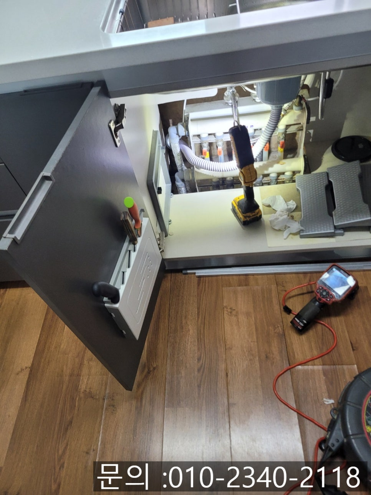
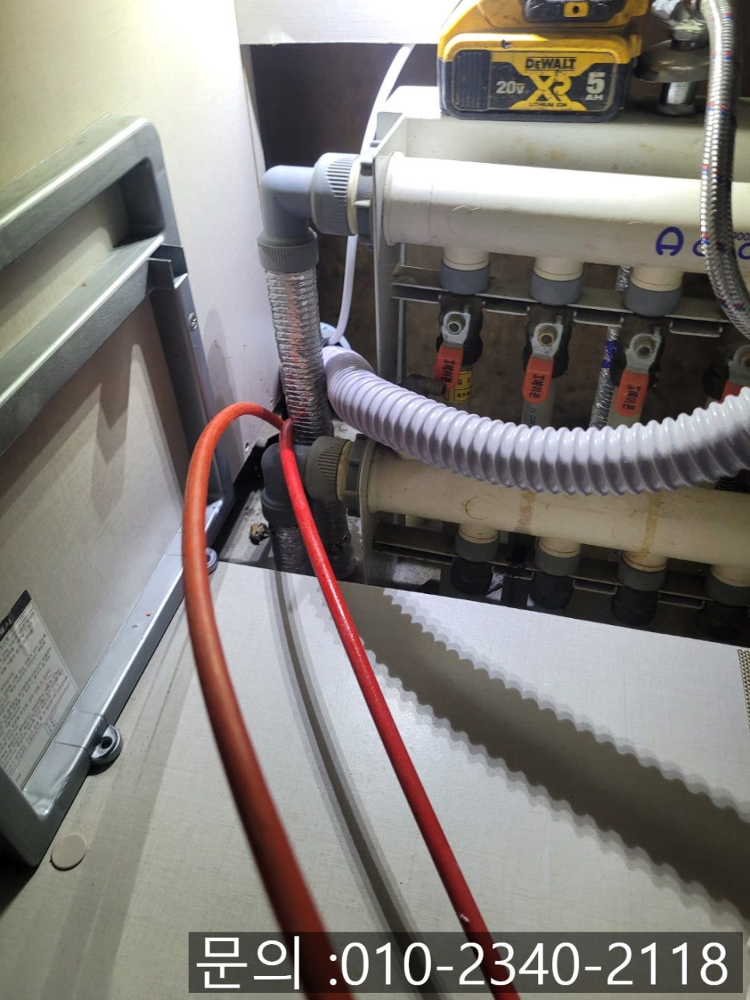
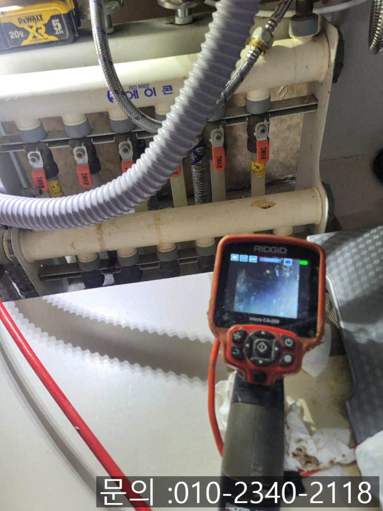
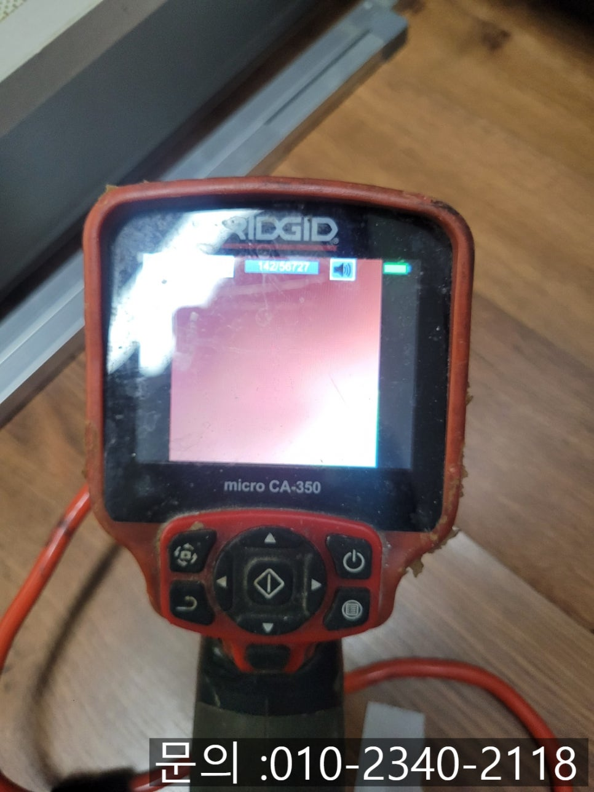
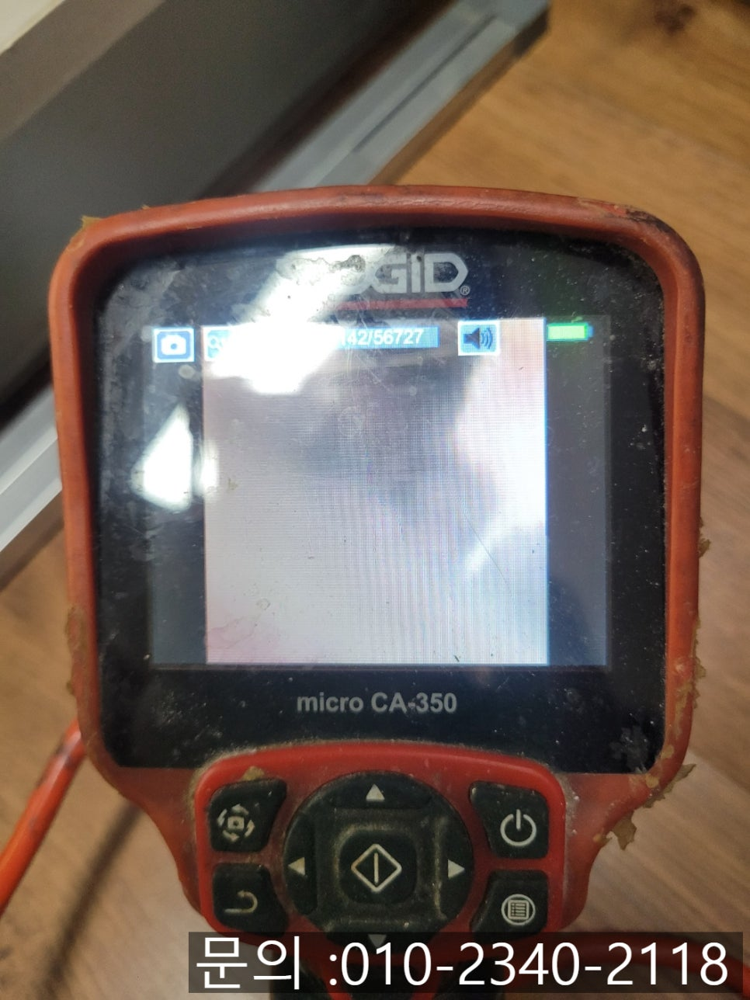
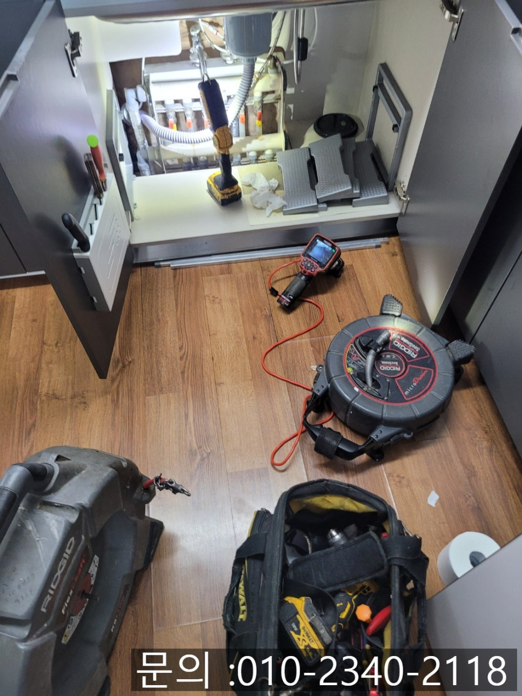

🏠 신갈동 싱크대 역류 해결 용인 영덕동 하수구 막힘 뚫는 업체
용인 영덕동 싱크대막힘 전문 시공 후기

📋 작업 개요
- 위치: 용인 영덕동, 영덕동, 용인
- 서비스 유형: 싱크대막힘, 하수구막힘, 배관막힘, 누수수리, 역류해결, 뚫는업체, 배관청소, 고압세척
- 작업 일시: 2025. 7. 16. 10:00
- 업체명: 하수구수사대 (010-5615-2118)
🔍 문제 상황
안녕하세요.
용인 영덕동 하수구 막힘 뚫는 업체 하수구 다큐멘터리입니다.
가정에서 물을 쓸 때마다 싱크대 배수구에서 물이 잘 내려가지 않거나, 심지어 물이 역류하기까지 한다면 얼마나 당황스러울까요? 이번 하수구 다큐멘터리가 출동했던 현장도 딱 그런 상황이었어요.
의뢰를 주신 고객님 댁에서는 싱크대 물이 잘 빠지지 않고, 식기를 세척할 때도 물이 위로 차오르면서 싱크대 볼 안으로 물이 고인다고 해요. 조금씩 불편하던 게 며칠 새에 심해지면서 결국 역류까지 발생하게 되었다며 연락을 주셨어요.

🔎 원인 분석
💡 전문가 진단: 싱크대 막힘! 더 이상 방치하지 마세요💡
신갈동 싱크대 역류 해결을 위해 현장에 도착해 가장 먼저 확인한 건, 싱크대 볼 안에 고여있는 물과 하 부장에서 배수가 흐르는 상태였어요. 겉보기에는 단순한 막힘 같았지만 경험상 내부 어딘가에 문제가 심할 수 있는 경우가 많거든요.
그래서 바로 배관 내시경 카메라를 투입시켰어요. 카메라가 달린 이 장비는 하수구 배관 속을 실시간으로 보여줘서 막힌 위치나 원인, 이물질이나 슬러지의 양을 정확하게 파악할 수 있답니다.
카메라 화면을 통해 본 내부는 예상보다 심각했어요. 배관 벽면 곳곳에 기름기와 음식물 찌꺼기가 딱딱하게 굳어 있었고, 그 사이사이엔 물에 녹지 않는 이물질과 슬러지가 잔뜩 끼어 있었어요. 이런 상태는 단순한 세척 용액이나 뚫어 뻥 같은 장비로는 세척을 완벽하게 할 순 없기 때문에 전문 장비가 필요했어요.
용인 영덕동 하수구 막힘 뚫는 업체 하수구 다큐멘터리는 이번 현장 배관을 청소하게 위해 플렉스 샤프트 장비를 활용하여 작업을 진행했어요.

🔧 작업 과정
샤프트 장비는 끝부분에 달린 갈퀴 모양의 체인이 막힌 하수구 배관 안을 회전력으로 샅샅이 갈아내는 장비입니다. 특히 배관 벽면에 붙어 있는 기름 덩어리, 음식물 찌꺼기처럼 단단하게 굳은 오염물까지도 잘게 부숴 깔끔하게 청소할 수 있다는 장점이 있습니다.
체인을 회전시키면서 천천히 작업을 반복적으로 진행하자, 빠른 속도로 물길이 생기면서 배관 속 이물질들이 갈리고 깨끗해지는 모습을 확인할 수 있었어요.
신갈동 싱크대 역류 해결을 마치고 다시 내시경으로 배관 내부를 점검하면서 혹시 남은 잔여물이 없는지 꼼꼼히 확인했답니다. 기름 찌꺼기와 슬러지가 말끔히 제거된 걸 확인할 수 있었고 물도 시원하게 쭉쭉 잘 내려가게 되었어요.
고객님께서도 작업 전후 모습을 함께 지켜보셨고 꼼꼼하고 안전하게 청소되었다고 안도하셨어요.
싱크대 막힘!
더 이상 방치하지 마세요💡


✅ 작업 완료
싱크대 막힘이나 역류는 불편함과 위생문제도 있지만, 아래층으로 누수되는 등 2차 피해로 이어질 수 있기 때문에 반드시 전문가와 함께 해결하셔야만 해요. 특히 요즘처럼 덥고 습한 날씨엔 배관 속 오염물에서 악취나 벌레가 생기기도 하니까 하수구 다큐멘터리의 전문 장비와 노하우로 빠르고 확실하게 문제를 해결하시길 바랄게요. 🙇♀️🙇♀️
경기도 용인시 기흥구 동백중앙로 191 8층 c8736호




⚠️ 베란다 누수 및 방수 관리 방법
- ✅ 비가 많이 올 때 창틀 주변이나 아래층 천장에 얼룩이 생기는지 정기적으로 확인해 보세요.
- ✅ 우수관 주변 실리콘 마감이 들뜨거나 깨진 틈새가 있는지 손상 여부를 수시로 체크하세요.
- ✅ 베란다 바닥 타일의 줄눈(메지)이 소실되면 그 틈으로 물이 침투하여 누수가 유발됩니다.
- ✅ 누수 의심 증상 발견 시 방치하면 아래층 손실이 커지므로 즉시 전문가의 진단을 받으십시오.
💡 핵심 정리
- 확실한 장비 작업(내시경 점검 및 샤프트 스케일링)으로 원인을 뿌리 뽑습니다.
- 작업 후 1년 이내에 동일한 부위 재발 시 100% 무상 A/S 서비스를 보장합니다.
- 서울 · 경기 · 인천 전 지역에 24시간 언제든 긴급 출동할 수 있도록 항시 대기 중입니다.
❓ 자주 묻는 질문 (FAQ)
🚨 용인 영덕동 싱크대막힘 문제로 고민이신가요?
정확한 원인 진단과 확실한 시공으로 재발 없는 해결을 약속드립니다.
24시간 긴급 출동 | 서울 · 경기 · 인천 전지역 | 1년 내 재발 시 무상 A/S